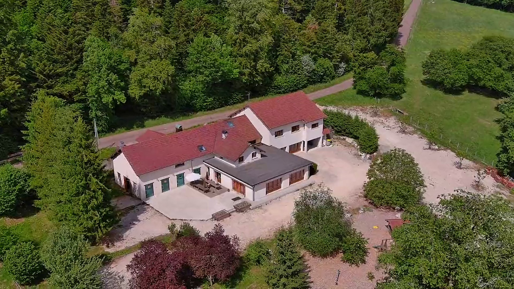
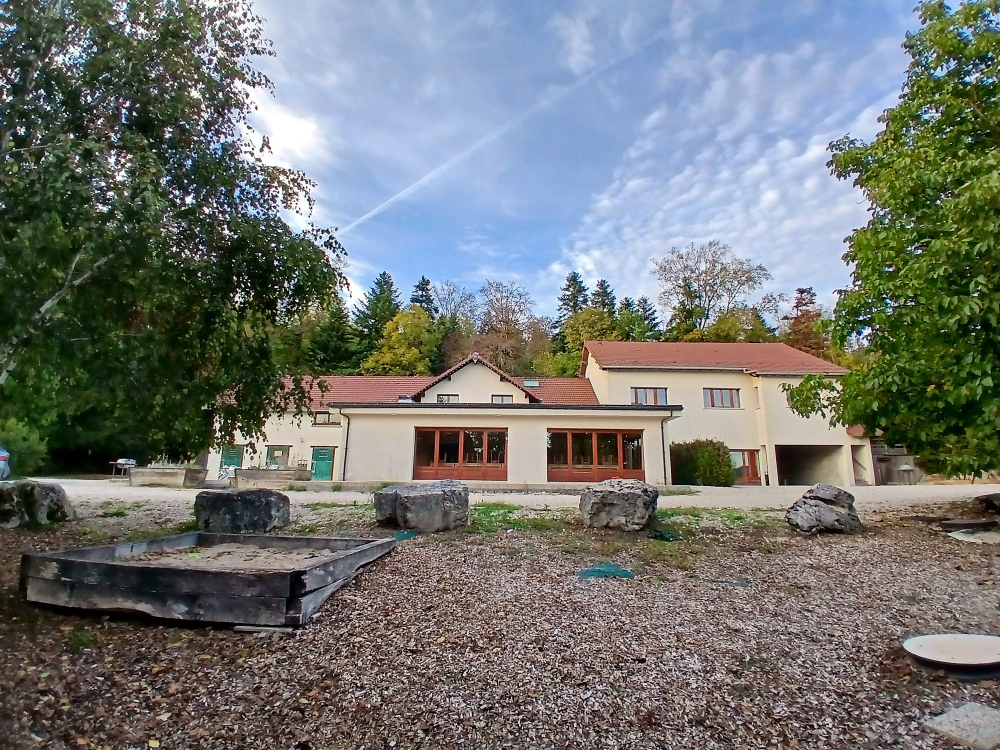
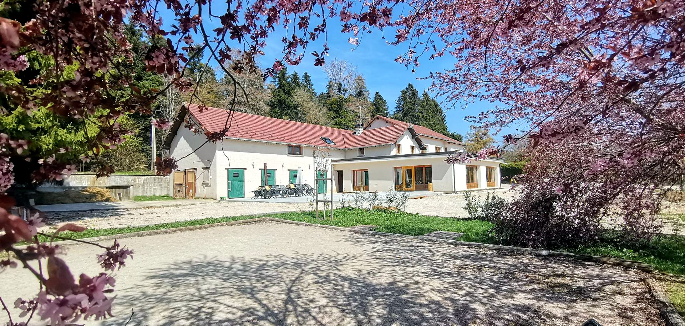
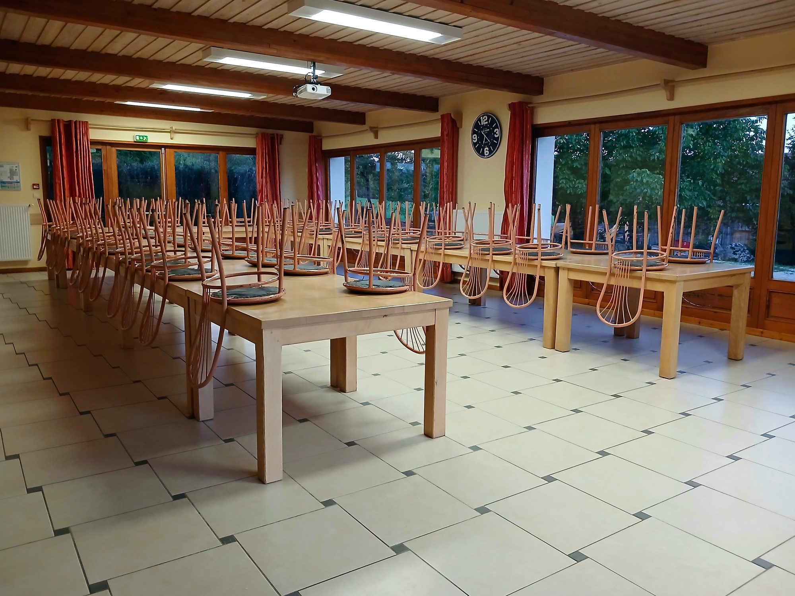
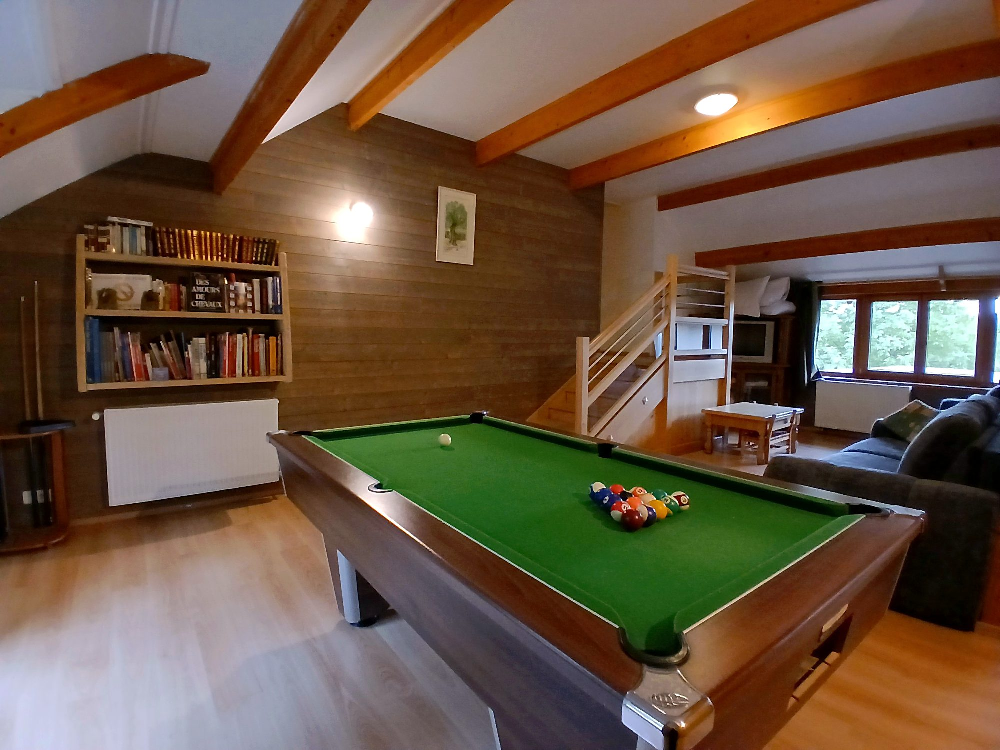
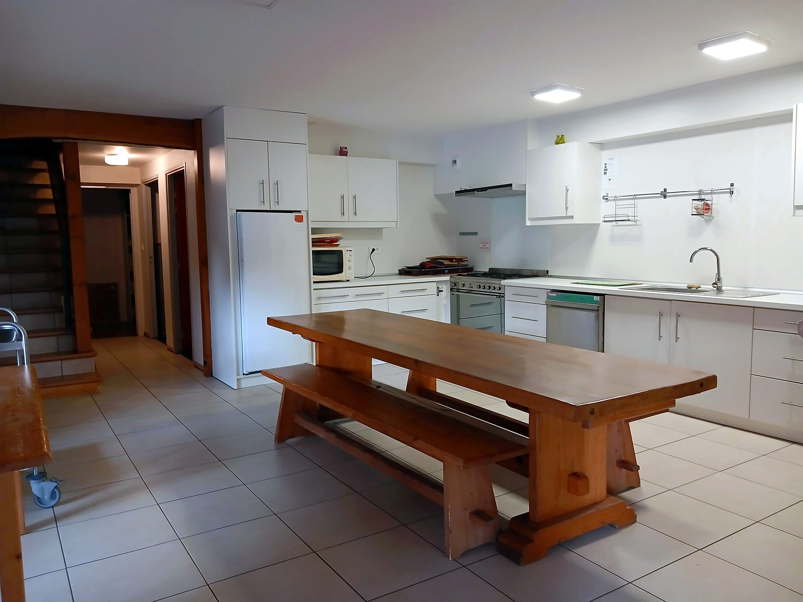
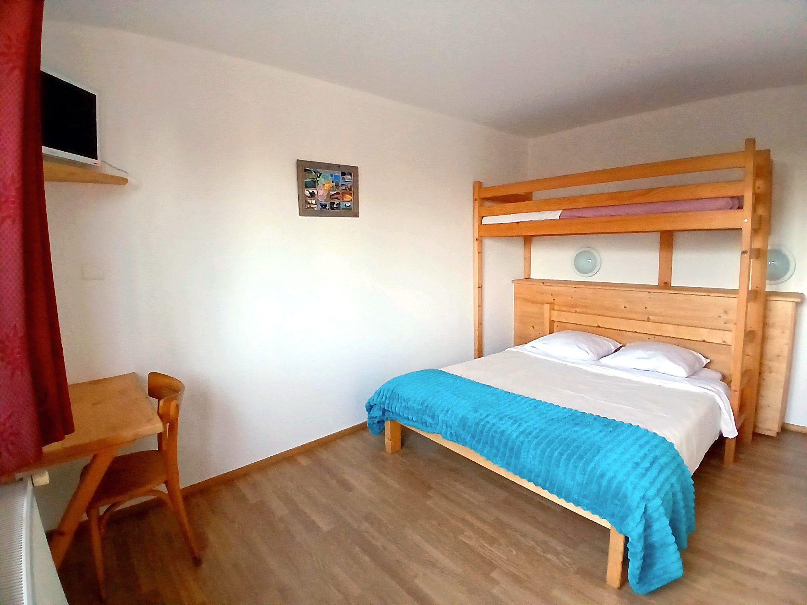
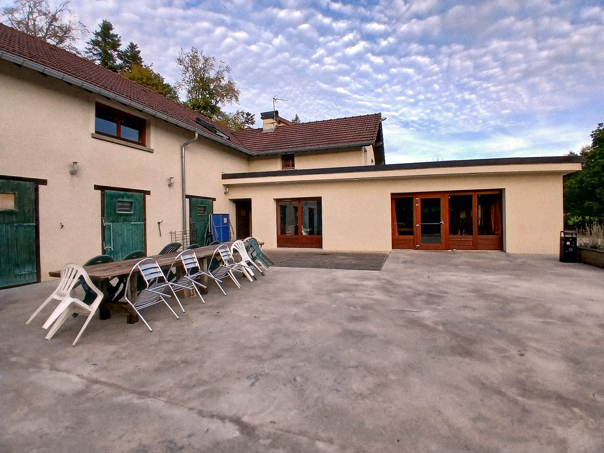
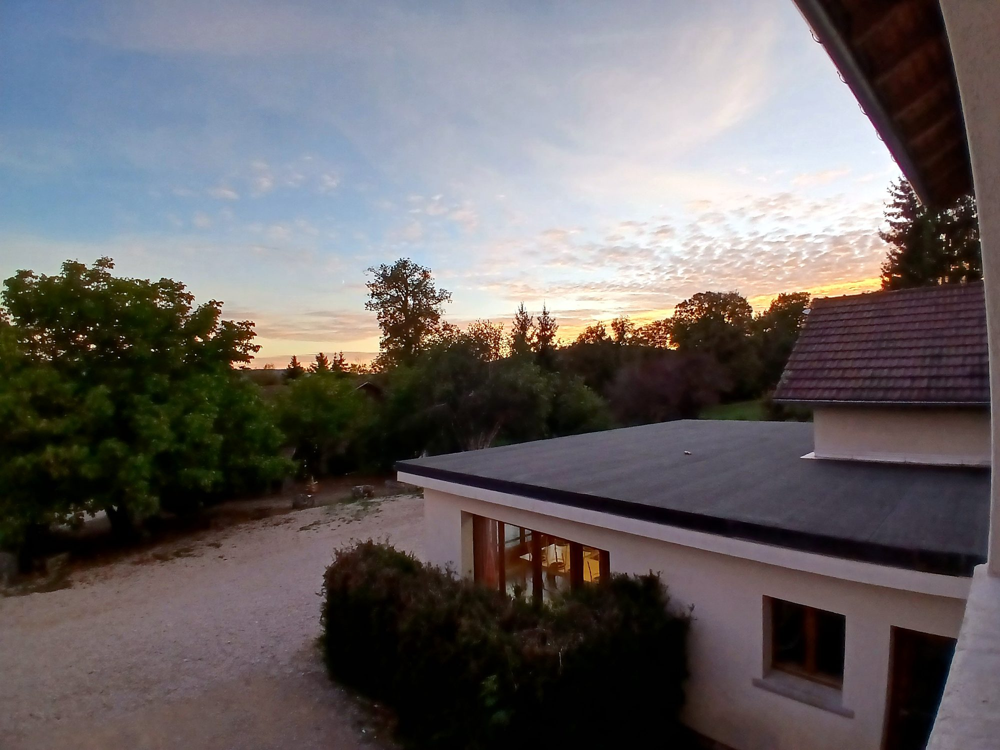
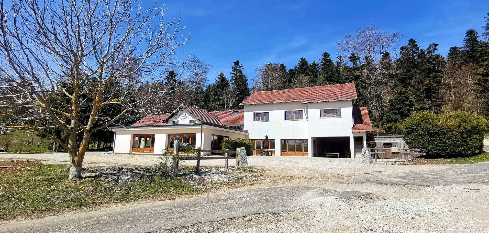

Les équipements sont top, avec 2 salles de réception, 2 cuisines, de l’électroménager. Les chambres et dortoirs sont tous équipés de sanitaires/ douches.
★★★★★4,6sur Google · 30 avis
Gîte sur la Baume
Deux gîtes indépendants ou le domaine entier privatisé : 43 couchages et 8 d’appoint, au calme dans les forêts du Haut Doubs.
Il ne manque rien, tout est bien pensé, propre et le propriétaire est une personne exceptionnelle !
50 personnes pour un anniversaire. Gîte très bien équipé, en retrait des habitations.
Grange gîte familial dans un environnement de nature.
Un super weekend et un accueil au top. Chambres propres et confortables.
- 43 couchageset 8 d’appoint, dans 2 gîtes
- Salle de conférenceavec vidéoprojecteur
- Ouvert toute l’annéechauffage inclus
- Animaux acceptésdans les deux gîtes
Combien êtes-vous ?
Faites glisser le curseur : vous voyez tout de suite ce que vous pouvez réserver. Le prix d’un gîte ne change pas avec le nombre de personnes.
18personnes
Le calme et la nature au cœur du Doubs
Le domaine est entouré de forêts, sur les premiers plateaux du Haut Doubs. Les deux gîtes indépendants sont à quelques mètres l’un de l’autre et rien qu’à vous.
- En lisière de forêtdans un petit hameau, à 1 km du village de Belleherbe
- En pleine campagneloin du bruit, « en retrait des habitations »
- À 750 m d’altitudeprès du GR5 et de la vallée du Dessoubre
- À quelques kilomètres de la Suisseau cœur du Haut Doubs









Pourquoi venez-vous ?
Choisissez votre projet : la page vous explique tout.
Installations et loisirs
De quoi occuper petits et grands pendant tout votre séjour, dehors comme dedans.
Qu’il fasse beau ou qu’il pleuve
- Terrain de pétanquele classique des soirées d’été
- Table de ping-pongen extérieur
- Barbecuepour vos grillades
- Les terrassespour les repas dehors
- Le préau couvertà l’abri, au Tilleul
- Les chemins autouren lisière de forêt
- Un billardau salon du Tilleul
- Un baby-footau Tilleul
- Bibliothèqueau salon détente du Tilleul
- Télévisiondans chaque chambre
- Wi-Fi gratuitsur tout le domaine
- Chauffageinclus dans le tarif
Dehors
- Terrain de pétanque
- Table de ping-pong
- Barbecue
- Terrasses et préau couvert
- Grand parking
Dedans
- Un billard (Tilleul)
- Un baby-foot (Tilleul)
- Bibliothèque
- Télévision dans toutes les chambres
- Wi-Fi gratuit
Pour les chevaux
- 7 stalles
- 4 boxes
- Accès direct à la pâture
Pour vos événements
- Salle de 60 places à La Cavalière
- Vidéoprojecteur dans cette salle
- Salle de 40 places au Tilleul
- Terrasses
Les infos pratiques
Ce qui est compris dans votre séjour, dans les deux gîtes.
- Wi-Fi gratuitsur tout le domaine
- Animaux acceptésdans les deux gîtes
- Accessible PMRune chambre adaptée au Tilleul
- Chauffage, eau et électricitéinclus, toute l’année
- Taxe de séjour incluserien à ajouter au prix
- Lits bébé disponibleslits parapluie et chaise haute
Fourni dans chaque gîte
- Draps et literie
- Linge de bain
- Gel douche et shampooing
- Papier toilette
- Produits ménagers
- Vaisselle et matériel de cuisine
Merci d’utiliser les produits ménagers fournis. Ils protègent la nature autour du gîte et le bon fonctionnement de la fosse toutes eaux.
Classé et agréé
- Gîtes de FranceClassé 2 épis
- Jeunesse et SportsAgrément pour l’accueil des jeunes
- Éducation nationaleAgrément pour les classes
- Sécurité incendieAvis favorable, dernière visite le 24 octobre 2024
Ce qu’en disent nos visiteurs
- Très bien équipé
- Propre
- Au calme
- Bel accueil
- Pour faire la fête
50 personnes pour un anniversaire. Gîte très bien équipé, en retrait des habitations. De grandes salles pour les repas, de nombreuses chambres. Je recommande.
Les propriétaires nous ont bien accueillis et se sont montrés très gentils pour répondre à toutes nos questions. Les chambres sont très propres et la cuisine bien équipée.
Salle de réception conviviale , cuisine bien équipée, chambres spacieuses avec sanitaire privatif et de grands lits. Billard, baby foot et flipper. Le tout dans un écrin de verdure .
Un super weekend et un accueil au top. Chambres propres et confortables. Gite très bien équipé. Nous reviendrons
Super endroit pour faire la fête. Des grandes chambres des jolies souvenir.

★★★★★4,6sur Google · 30 avis
Préparez votre prochain grand moment
Dites-nous vos dates et combien vous êtes : Carole vous répond avec un devis.
Demander vos dates